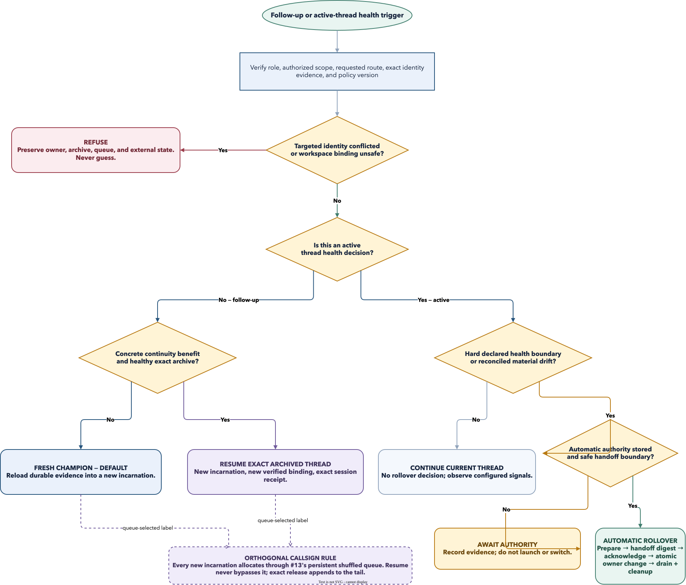

Default route
Fresh Champion. Resume is exceptional and must be cheaper and safer than reloading durable evidence.
League of Orchestrator · Issue #15 · Design only
A follow-up gets a fresh Champion unless continuity has a concrete benefit and the exact archived context is healthy. Rollover is a fenced handoff—not cleanup, not callsign reuse, and never an inferred identity.
Decision first
The router records an evidence snapshot and chooses resume, fresh, rollover, or
refusal. A soft threshold may instead produce awaiting_authority;
it never manufactures permission to launch or switch owners.

Separation is the safety mechanism
Teardown may finish while a provider thread remains durably resumable. A resumable archive preserves no endpoint, worktree, resource lease, or callsign.
Archive exact identity/evidence, close only the proven endpoint, remove only eligible disposable resources, release callsign last.
Does not select future thread routing.Select the first compatible available label from one persistent shuffled queue; activated release appends to the tail.
Does not imply historical identity.Claim one exact durable archive, verify resume capability, and bind a newly proven cwd/worktree.
Does not preserve old runtime resources.Evaluate active context health, authority, safe boundary, handoff digest, acknowledgement, and owner fence.
Does not reclaim a historical callsign.Policy matrix
Explicit resume or fresh routes are preserved. An explicit target
that fails identity or safety gates refuses; it is never silently replaced by a different route.
| Verified situation | Outcome | Authority | Durable effect |
|---|---|---|---|
| Concrete benefit; exact durable unique archive; declared exact resume and safe rebind; healthy context; reconciled instructions; no claim conflict. | RESUME | Existing scope covers the follow-up. | New incarnation + queue-selected callsign + exact resumed-thread receipt. |
| New/loosely related work, no concrete benefit, degraded/unknown context, or durable evidence is cheaper to reload. | FRESH · DEFAULT | Ordinary dispatch authority. | Existing recoverable assignment lifecycle; immutable archive unchanged. |
| Active context crosses a hard configured boundary or reconciled material drift; same scope; safe boundary; stored automatic opt-in. | AUTO ROLLOVER | Same role/scope only; no new external authority. | Prepare → handoff → acknowledge → atomic owner switch → drain/cleanup. |
| Rollover evidence exists but automatic authority is absent, or only a soft threshold crosses. | AWAIT AUTHORITY | Summoner decision required. | Record evidence and proposal; do not launch or switch. |
| Target identity missing/ambiguous/reused; durability/capability undeclared; binding unsafe; drift unresolved; fence/ack conflict; or no compatible callsign. | REFUSE | Manual reconciliation or new request. | Bounded refusal; preserve current owner, archive, queue, and external state. |
An interrupted or blocked operation has an exact durable recovery fence and next action.
The follow-up revises or diagnoses the same exact unlanded head, finding set, or receipt.
A bounded acknowledged chain already holds the alternatives and evidence references.
Same callsign, repository, broad topic, issue family, or familiarity does not qualify. If the handoff already contains everything required, fresh wins.
Trustworthy signals
Adapters declare which signals they produce, their units, durability, and observation time. Missing means unavailable—not zero. Every threshold is versioned configuration data.
{
"schema": "league.continuation-policy.v1",
"follow_up_default": "fresh",
"rollover_authority": "awaiting_authority",
"thresholds": {
"context_remaining_ratio": {"soft": 0.30, "hard": 0.15, "source": "adapter_declared"},
"compaction_count": {"soft": null, "hard": null, "source": "adapter_declared"},
"transcript_budget_remaining_ratio": {"soft": null, "hard": null, "source": "adapter_declared"},
"elapsed_age_days": {"soft": 14, "hard": null, "source": "canonical"},
"completed_task_count": {"soft": 2, "hard": null, "source": "canonical"}
}
}Bounded handoff + fenced recovery
The old incarnation stays authoritative through replacement launch and acknowledgement. The one owner switch is the commit point; cleanup follows it and remains independently recoverable.
The same task/scope remains authorized. A new incarnation receives the handoff; no new task is invented.
Active Champions retain their exact task, thread, worktree, history, and capability bindings. #8 adds guarded Shotcaller drain/cleanup without making Shotcallers eligible for task teardown.
owner_changed, and enqueue recipient effects.Old owner remains canonical. Retry the same fenced commit or abort exact replacement resources. Restore an unactivated callsign reservation to its recorded queue position.
Never roll ownership back. Recovery rolls forward predecessor drain and cleanup idempotently. At no point may both incarnations accept intake.
Future implementation boundary
Both extend the current league.command.v1 envelope, expected-version/fence
rules, event/outbox atomicity, recoverable assignment, opaque identity, proof-first
cleanup, and issue-#23 acceptance boundary. Neither creates a parallel lifecycle.
continuation decide|statusrollover prepare|acknowledge|commit|abort|status
callsign allocate|status
existing callsign release becomes release-to-tail for activated assignments.
continuation_decided, thread_resumed, rollover_prepared, rollover_acknowledged, one owner_changed, rollover_aborted, and callsign lifecycle events.
| Record | Owns | Does not own |
|---|---|---|
thread_archives | One unique opaque provider identity, durability/capabilities, instruction digests, health snapshot, and evidence references. Incarnation bindings reference it and retain unique endpoints/generations. | Duplicate thread identity, live endpoint, or callsign lease. |
continuation_decisions | Trigger, explicit route, benefit, signals, policy digest, outcome, reasons, authority. | Runtime or owner mutation. |
rollover_operations | Old/new incarnation, role-neutral scope, fence, handoff digest, acknowledgement, commit/rollback receipts. | Request/assignment/delivery duplicate state. |
callsign_queue + callsign_assignments | Stable shuffled rank and immutable assignment history. | Continuation preference. |
Never-used generations, quarantine queue, hard cooldown, and least-recently-used fallback.
One persisted shuffled queue; release appends to tail; recency ranks rather than bans; a recent sole compatible candidate remains allocatable.
A resumed thread receives the historical callsign only if the normal #13 allocator selects it. A rebound name is never stolen or aliased; immutable incarnation and thread references preserve history.
Current-state honesty: the generic runtime has a resume method, but Codex does not declare that capability,
Herdr/tmux drivers are contract-only, real runtimes remain unverified, and the current task cleanup planner
refuses Shotcallers. #8 must preserve those boundaries while adding one unique thread-lineage identity and a
Squad-level owner_changed aggregate; it must not disguise the change as an unrelated task/agent event.
No open design questions
| Question | Resolution |
|---|---|
| When is a follow-up related enough? | Only with one of three recorded concrete benefits; labels and broad similarity do not qualify. |
| Does fresh remain the default? | Yes. Resume additionally requires exact durable identity, safe binding, healthy context, and reconciled instructions. |
| Which health signals are reliable? | Canonical age/task counts plus declared normalized adapter signals. Raw transcript guesses are excluded. |
| Does a threshold auto-create a replacement? | No by default. Await authority; automatic rollover requires explicit stored same-scope opt-in and a safe boundary. |
| What if the old callsign was reused? | Allocate normally through #13. Never steal, alias, or rewrite historical identity. |
| How do roles differ? | The contract is identical; only the atomic owner target differs: one task or one stable Squad pointer. |
Grounded in the merged repository-local request, runtime/cleanup/routing, and acceptance contracts. This artifact claims design completeness only—not implementation, installation, cutover, live support, or smoke.